Change the avatar details (icon, description & name)
An avatar’s details can be viewed in the iOS app by tapping the Info button that appears in the top right corner when your avatar is previewed in the gallery (see Mobile app avatar gallery image below). The icon, name and description can be changed in the Animaze Editor.
Animaze automatically creates an icon for the imported item. However, you might want to change that with an image that represents the avatar better. Below we detail where you find the avatar’s icon, how to change it and how to view your results in the Animaze mobile app.
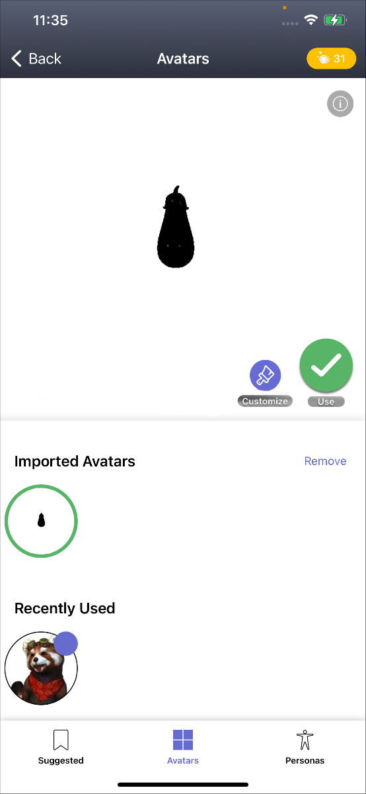
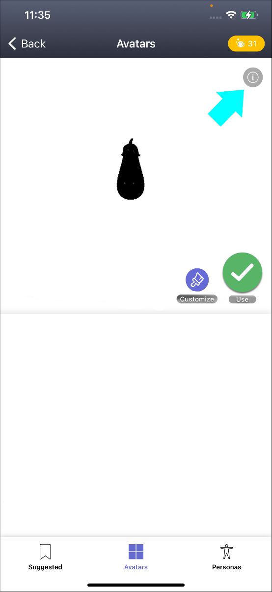
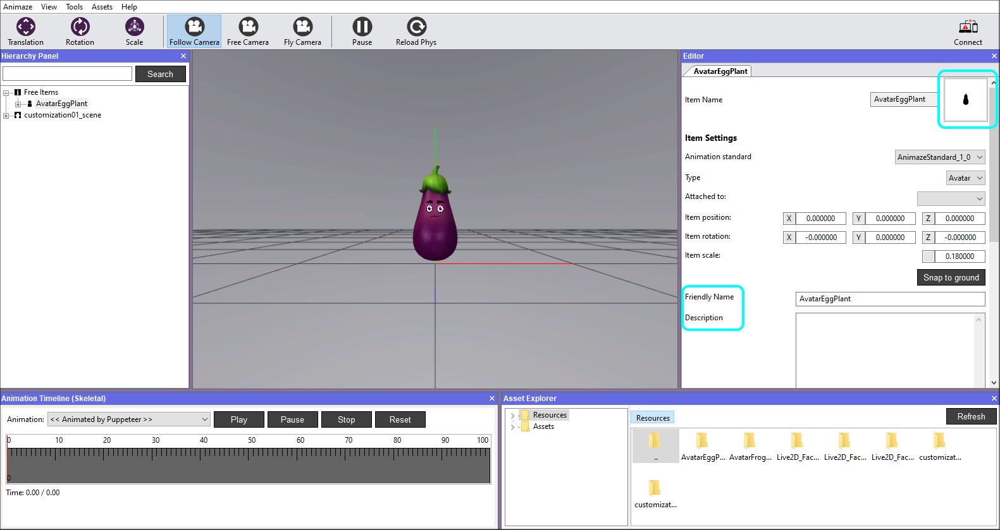
Steps to change your Avatar’s icon:
-
Go to the Animaze Editor install folder on your PC
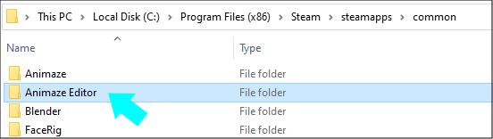
-
Go to Data folder
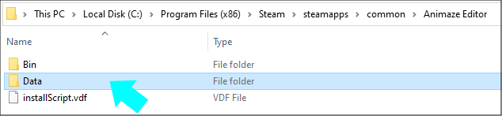
-
Open Resources folder
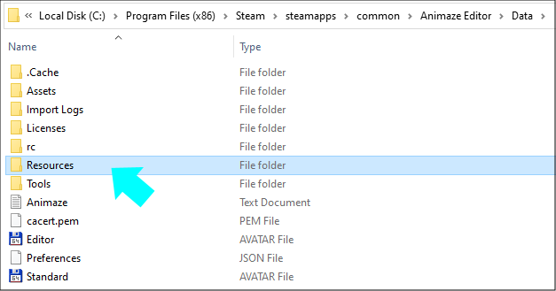
-
Open the avatar’s folder
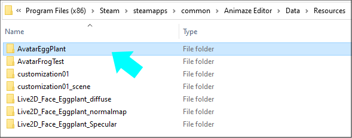
-
You will find a file named icon_AvatarName.png, which was automatically created by the Editor at import. Create a new icon image for it, with a square size and naming convention icon_AvatarName. This way you will change the icon for the avatar in the app and Editor.
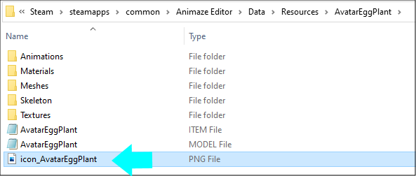
You must keep the same naming convention (icon_AvatarName), image format *.png and a square size in order for it to work.
-
Animaze Editor will detect the changes made and will ask you to reimport. Click Yes.
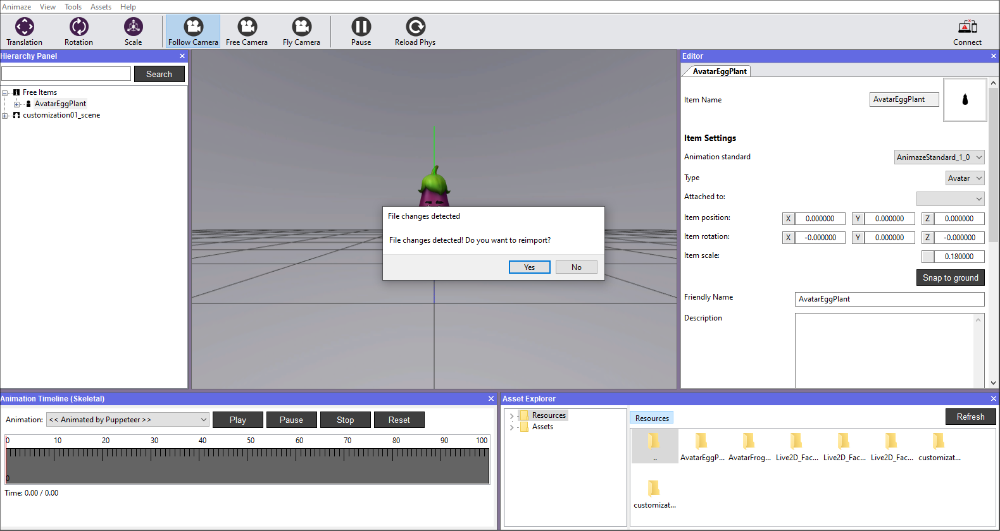
-
To see the changes, go to the Assets menu and select Load Avatar.
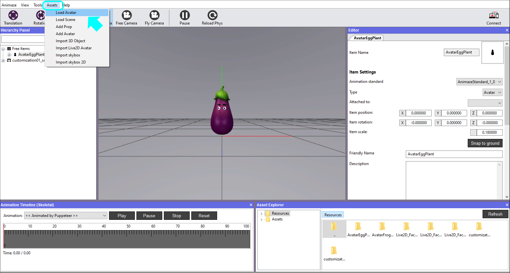
-
Hit the Refresh button, then search and select avatar.
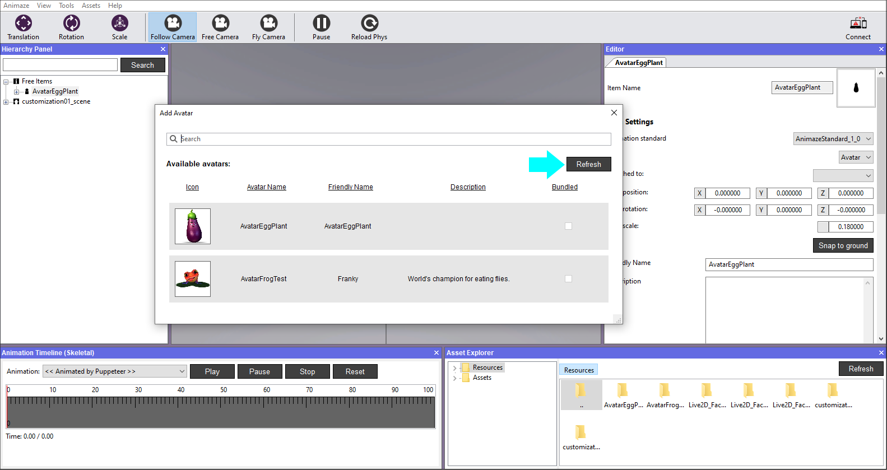
9. The avatar should display the new icon.
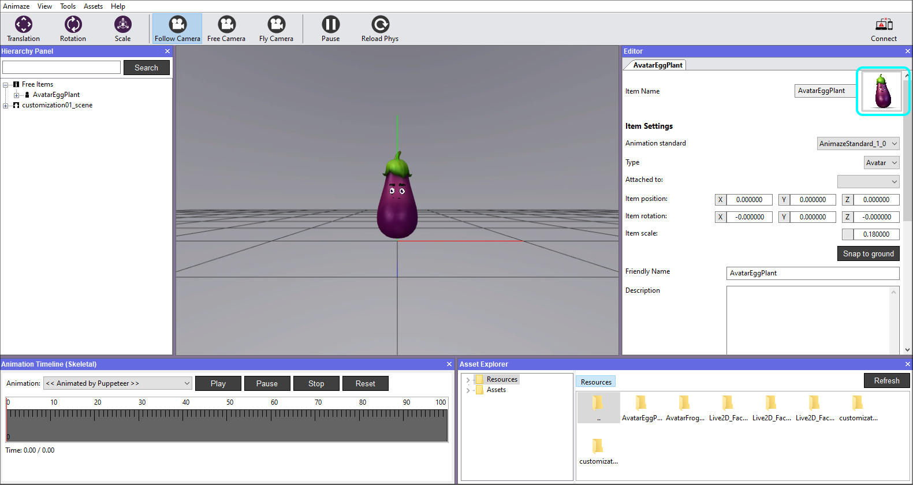
Steps to change your Avatar’s name:
-
Open Animaze Editor
-
In the Editor Panel, write the desired name in the Friendly Name field. We recommend that you make the name human readable (rather than random letters and numbers). That said, you can use any alphabet and special characters.
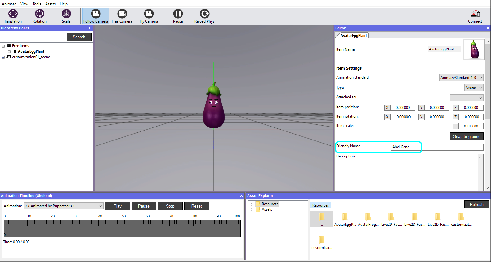
Steps to change your Avatar’s description:
-
Open Animaze Editor
-
In the Editor Panel, write the desired description in the Description field. It can be the avatar’s backstory you imagined, technical details or you can leave it blank.
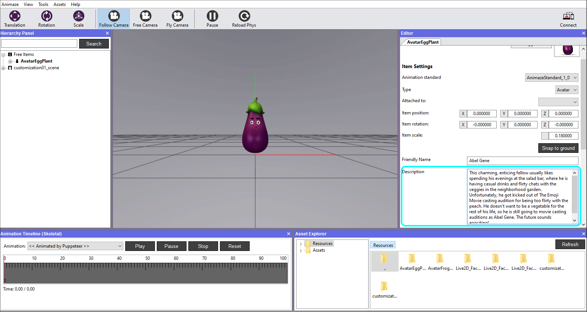
-
Save item in the Hierarchy Panel when you are done with the changes, be it name, description or other details. If you exit the Animaze Editor without saving, all of your work will be lost.

i.e. when you Save item as... under another name, it will create a different folder in Resources directory and save it outside the original version, as a new item.
Go to the Avatar gallery in the app and find the avatar after you’ve sent it to your device. Tap the Info button and see the description you added.
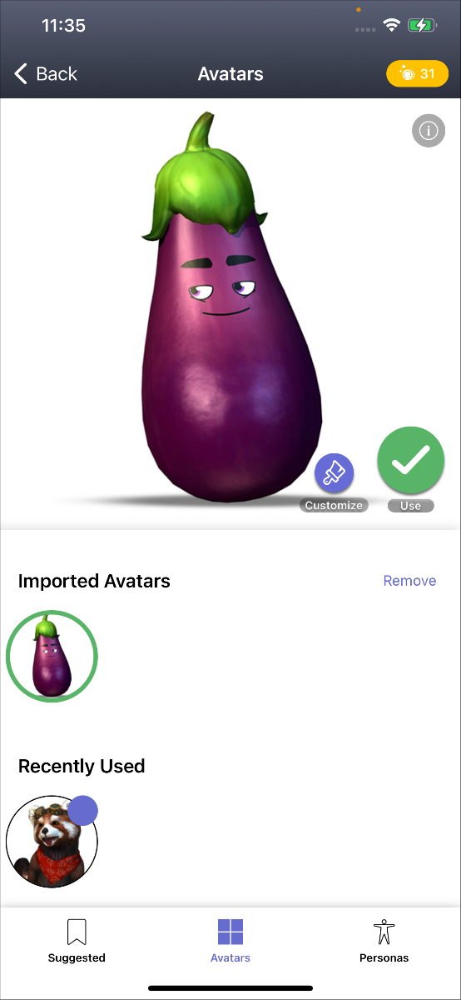
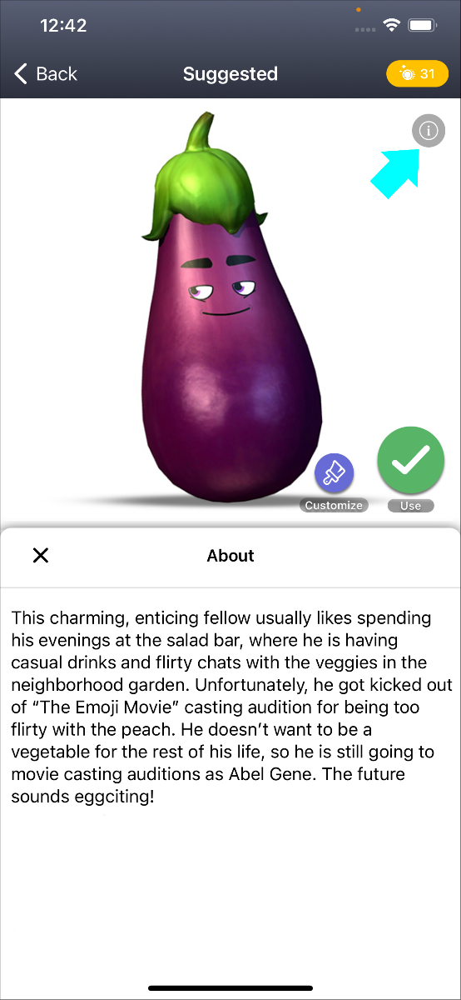